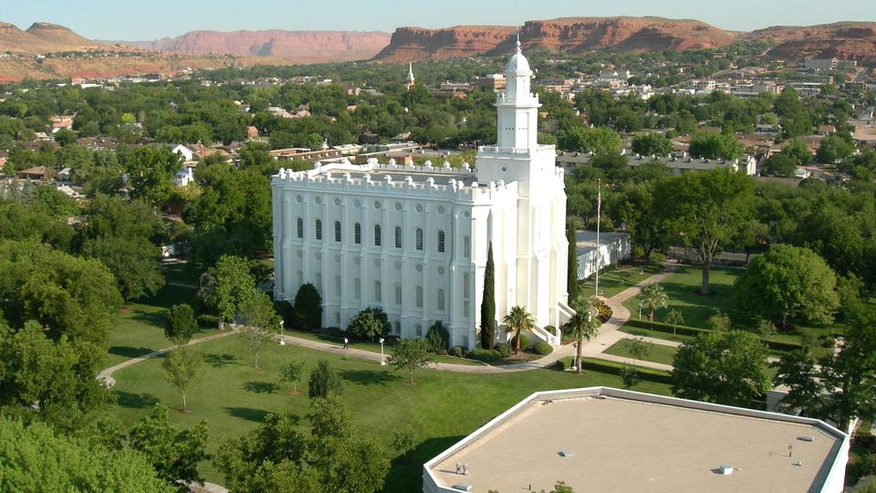

St. George Temple

St. George Summary
Currently:
High: ℉
Wind Speed: mph
Humidity: %
Wind Chill: ℉
Phone: (435) 673-3533
Website – lds.org
Hours: 7:00 a.m. – 10:00 p.m.
Services:
Clothing Rental Available
Patron House Available
Distribution center nearby
- 7:20 a.m.
- 8:00 a.m.
- 8:40 a.m.
- 9:20 a.m.
- 10:40 a.m.
- 11:20 a.m.
- 12:00 p.m.
- 12:40 p.m.
- 1:20 p.m.
- 2:00 p.m.
- 2:40 p.m.
- 3:20 p.m.
- 4:00 p.m.
- 4:40 p.m.
- 5:20 p.m.
- 6:00 p.m.
- 6:40 p.m.
- 7:20 p.m.
- 8:00 p.m.
Salt Lake City Temple

Salt Lake City Summary
Currently:
High: ℉
Wind Speed: mph
Humidity: %
50 N Temple, Salt Lake City, UT 84150 U.S.
Phone: 801 531-1000
templesquare.com
Services
Clothing rental available
Cafeteria available
No patron housing available
Distribution center nearby Hours – 6:00 a.m. to 9:00 p.m.
Ordinance Schedule
Sessions Start hourly between 6:00 a.m. to 7:00 p.m.
Phoenix Temple

Phoenix Summary
Currently:
High: ℉
Wind Speed: mph
Humidity: %
623-474-6200
Services
No clothing rental available
No cafeteria available
No patron house available
No distribution center available
- 7:30 a.m.
- 8:30 a.m.
- 9:30 a.m.
- 10:30 a.m.
- 4:30 a.m.
- 5:30 a.m.
- 6:30 a.m.
Los Angeles Temple

Los Angeles Summary
Currently:
High: ℉
Wind Speed: mph
Humidity: %
Los Angeles, CA 90024 U.S.
Phone: 310-474-1549
Website: lds.org
Services
Clothing rental available
Distribution center nearby
Cafeteria
Patron housing available
Hours 9:00 a.m. to 9:00 p.m.
- 5:30 a.m.
- 6:45 a.m
- 8:00 a.m.
- 9:15 a.m.
- 10:30 a.m.
- 11:45 a.m.
- 1:00 p.m.
- 2:15 p.m.
- 3:30 p.m.
- 5:00 p.m.
- 6:15 p.m.
- 7:30 p.m.